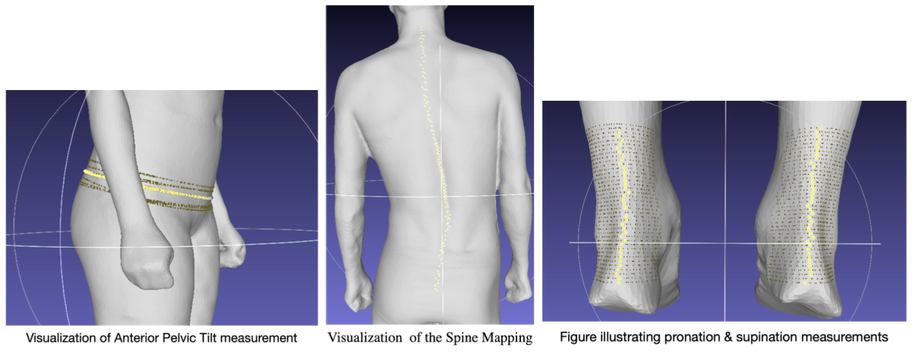

Computer Vision Projects at Shape
Shape Labs Inc. · San Francisco · Feb. 2024 – Aug. 2024

Led three production pipelines for the Shape whole-body 3D scanner, spanning medical posture analytics, animation rigging, and clothing compliance checks to safeguard measurement accuracy. Detailed methods and evaluation for the posture analysis stack are documented in the Posture project report.
Scope
- Posture analysis pipeline. Built a whole-body measurement stack that detects musculoskeletal indicators such as anterior pelvic tilt, spinal curvature, and limb pronation directly from high-resolution scans.
- Automatic rigging for animation. Authored a C++ retargeting pipeline that fits Mixamo/gLTF skeletal hierarchies onto Shape scans, powering a realtime iOS demo for showcasing custom animations.
- Residual network for clothing detection. Trained a ResNet50-based classifier on 60k+ images to flag non-compliant apparel and prevent corrupted body-composition reports.
Posture Analytics Visuals
Figure: Composite overlays from the medical posture analysis toolchain.
Animation Retargeting Demo
iOS Demo Walkthrough
Clothing Compliance Classifier
To maintain scan fidelity, I built a residual CNN that monitors live capture sessions, prompting users to adjust clothing before the scan completes. The model integrates with the Shape backend to block exports, raising accuracy to 98.5% over baseline heuristics.